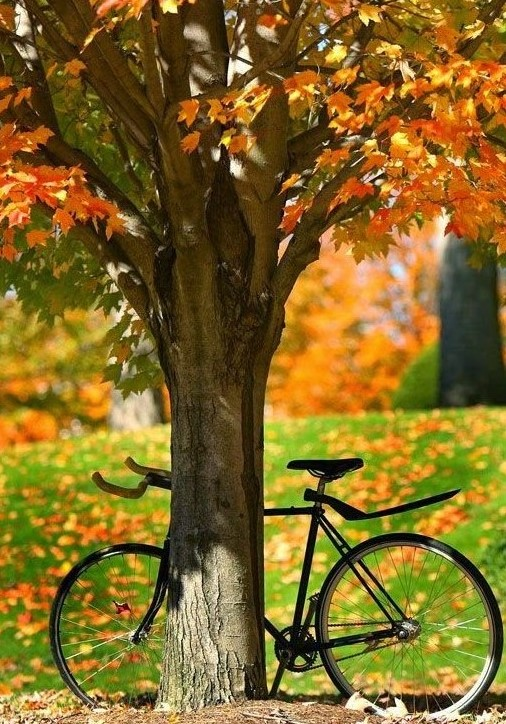
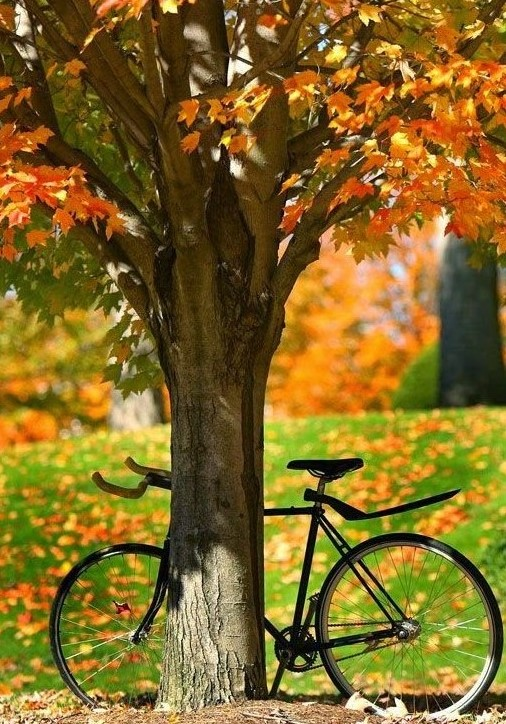
La primavera es la estación del año comprendida entre el invierno y el verano; en el hemisferio norte, se sitúa aproximadamente entre el 21 de Marzo, equinoccio de primavera, y el 21 de Junio, solsticio de verano, y en el hemisferio sur entre el 21 de Septiembre y 21 de Diciembre.
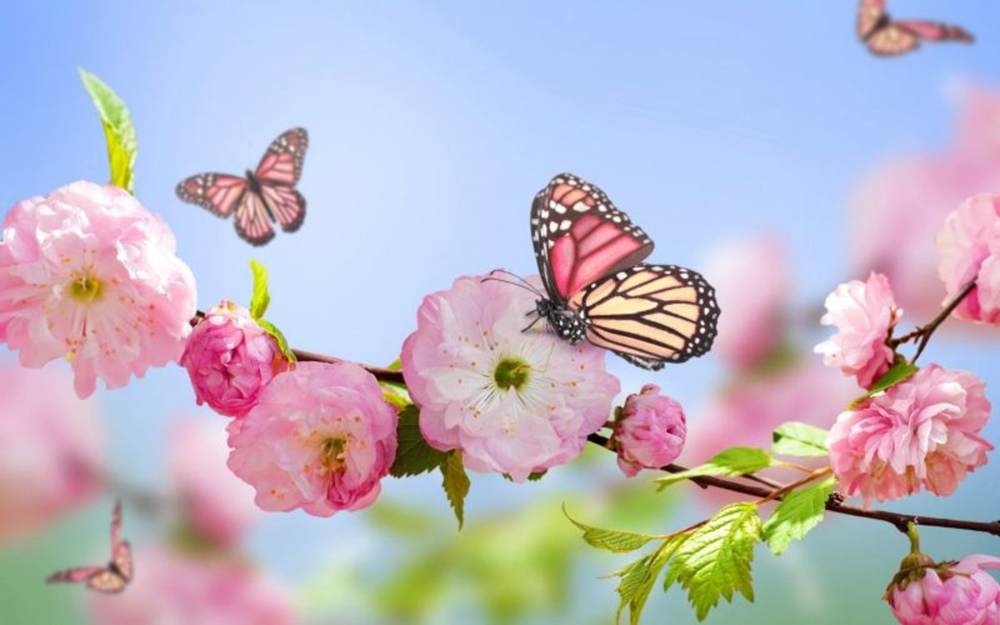Esta temporada se identifica tradicionalmete con el renacimiento de la naturaleza, un aumento de temperaturas medias, el deshielo, la floración de las plantas, el despertar de los animales y el regreso de las especies migratorias.
Cabe mencionar que, tradicionalmete, la primavera también está ligada al amor y al comienzo de las relaciones de pareja. Es común que nazcan muchos lazos el primer día de la estación,
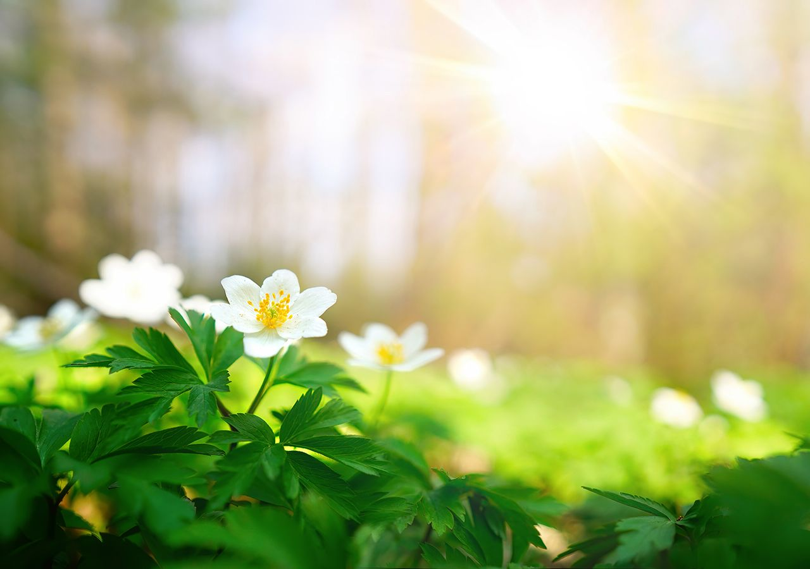 algo que puede apreciarse en los numerosos eventos y salidas, donde generalmente los protagonistas son los más jóvenes.
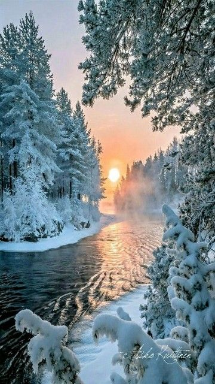 El invierno es la estación del año comprendida entre el otoño y la primavera; en el hemisferio norte, se sitúa aproximadamente entre el 21 de Diciembre, solsticio de invierno, y el 21 de Marzo, equinoccio de primavera, y en el hemisferio sur entre el 21 de Junio y el 21 de Septiembre.
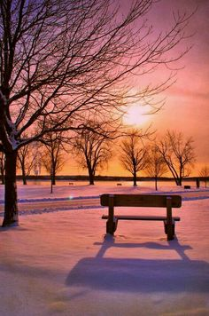 Esta estación se caracteriza por días más cortos, noches más largas y temperaturas más bajas a medida que nos alejamos de la lí´nea ecuatorial. en algunos países de la zona intertropical se utliza el término de estación lluviosa para denominar a una época de mayor precipitación y pluvosidad.
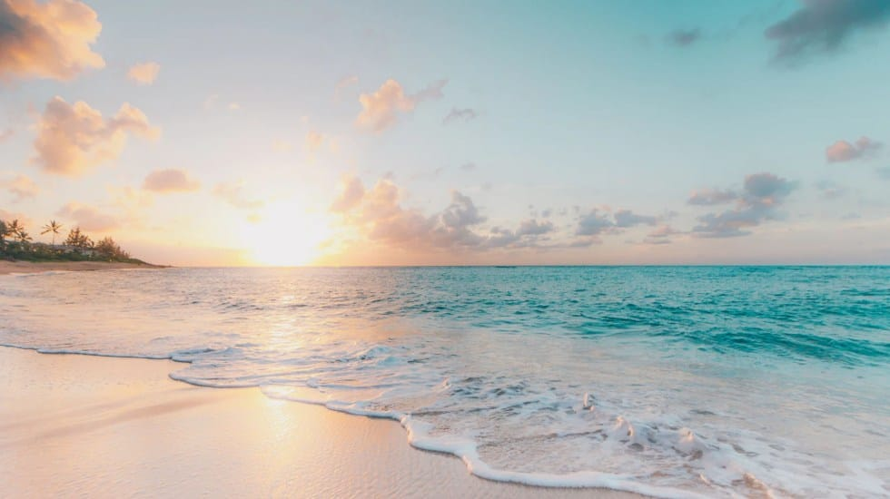El verano es la estación del año comprendida entre la primavera y el otoño en el hemisferio norte, se sitúa aproximadamente entre el 21 de Junio solsticio de verano, y el 21 de Septiembre equinoccio de otoño, y en el emisferio sur entre el 21 de Diciembre y el 21 de Marzo.
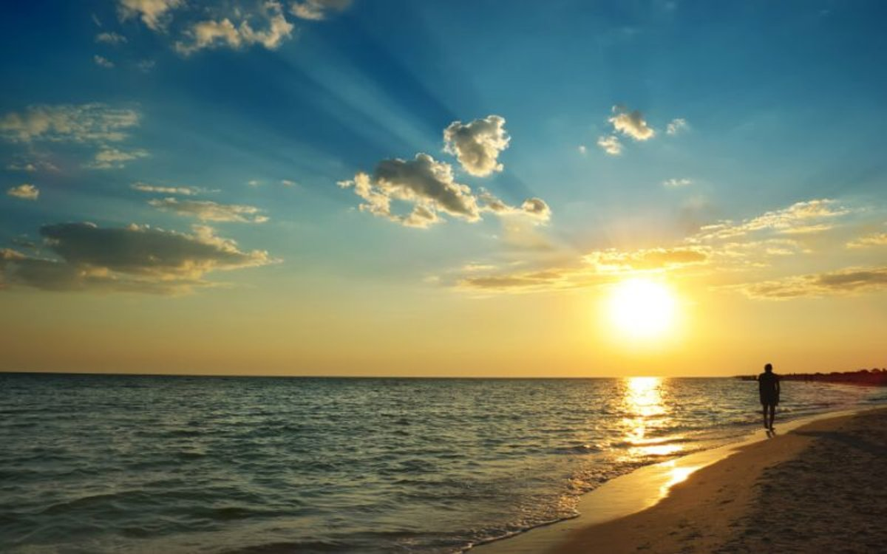Sin embargo, a veces, el verano se define como la totalidad de los meses de Diciembre, Enero y Febrero en el hemisferio sur y como la totalidad de los meses de Junio, Julio y Agosto en el emisferio norte.
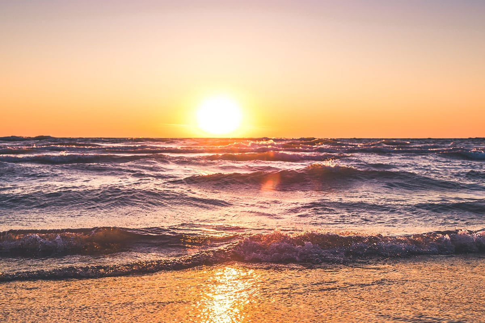Esta es la estación más cálida del año, que tiene lugar entre la primavera y el otoño. Las temperaturas durante este período difieren según la unicscion de la tierra; las regiones cercanas al ecuador suelen ser más cálidas que las que se encuentran cerca a los polos.
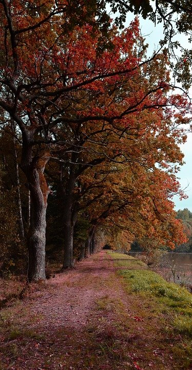
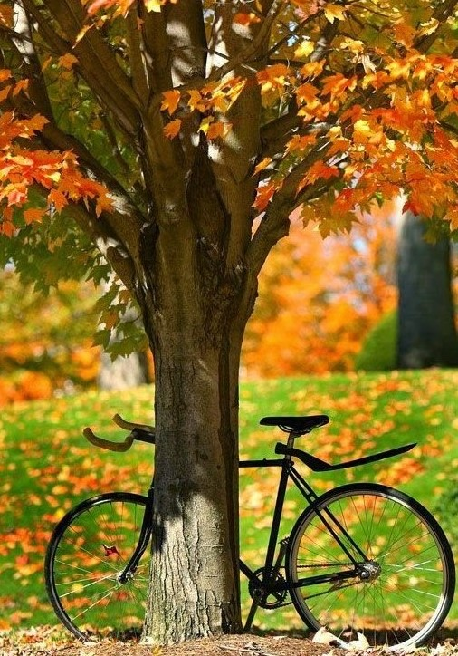